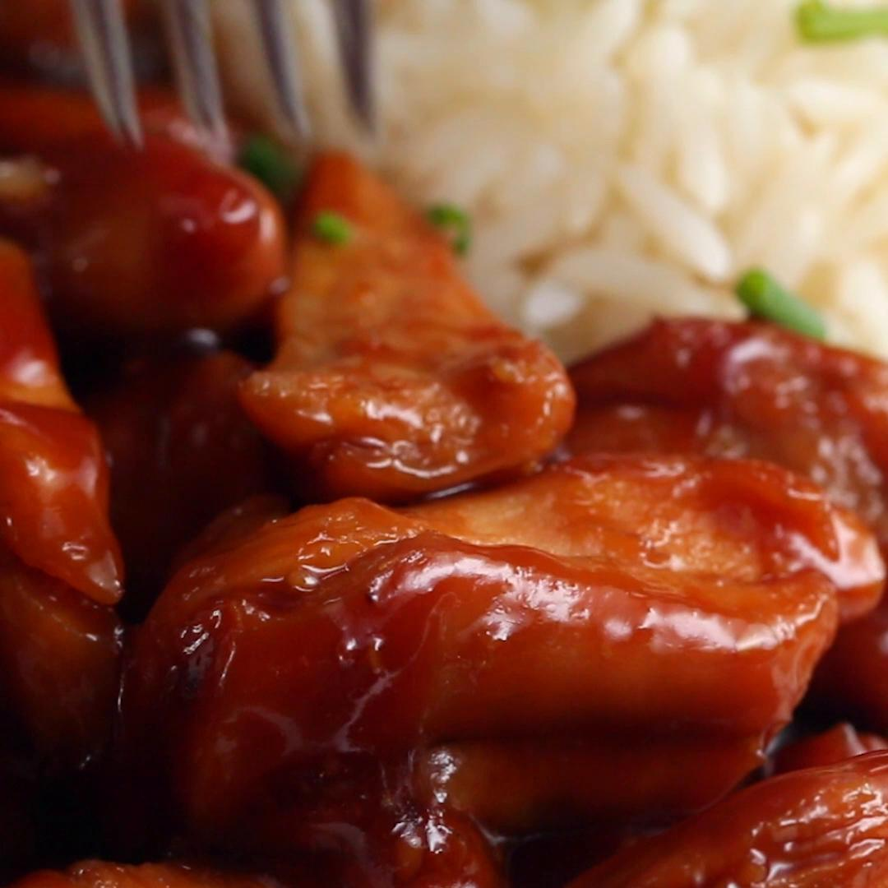

teriyaki chicken

description
i just love teriyaki and chicken.
that's why this recipe is here.
ingredients
for 4 servings
- 2 lb chicken thighs (910 g), sliced into chunks
- 1 cup soy sauce (240 ml)
- ½ cup brown sugar (110 g)
steps
- sear the chicken thighs evenly in a pan, then flip.
- add the soy sauce and brown sugar, stirring and bringing to a boil.
- stir until the sauce has reduced and evenly glazes the chicken.
- serve with rice, if desired!
- enjoy!